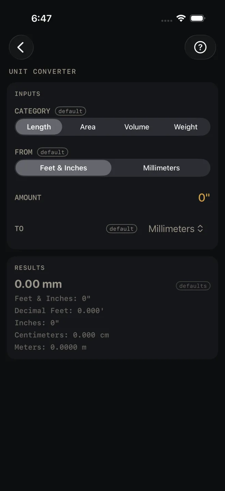
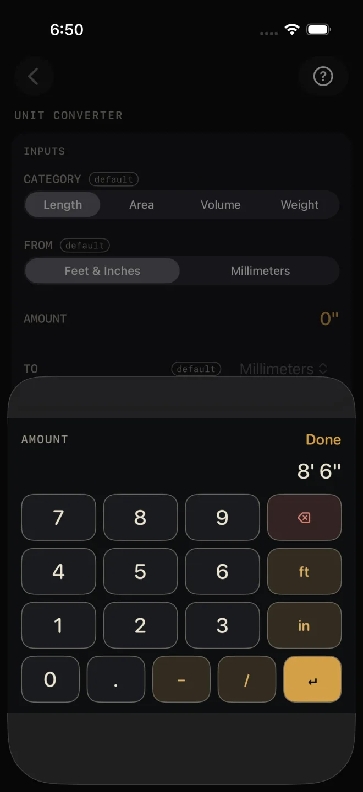
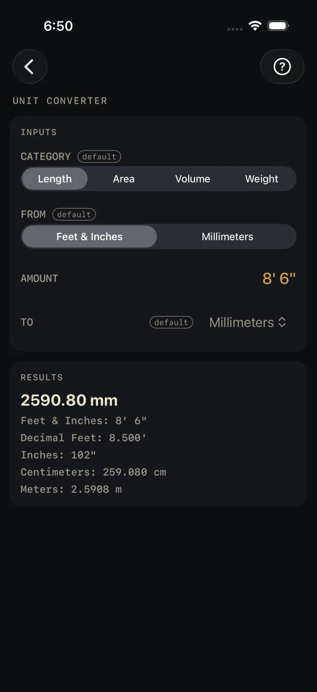

Unit Converter
What it's for
Turns one measurement into another: a length, an area, a volume or a weight. You enter one amount and get it in every unit of that category at once, so a metric dimension off a European spec sheet reads in feet and inches, or cubic feet of fill reads in yards. It converts only. There is no material list and nothing is checked against code.
Step by step
The screen opens on Length, feet and inches to millimeters, with nothing entered. The example converts an 8' 6" length to millimeters.

1 2 3 4
3- CATEGORY — pick Length, Area, Volume or Weight. The rows below change to suit.
- FROM — the unit you have. For Length the choice is Feet & Inches or Millimeters.
- AMOUNT — tap it and type the number. With Feet & Inches selected you type feet, inches and fractions the usual way, see Entering feet, inches and fractions. For the example, key 8 ft 6 in, then Done. With Millimeters, or in any other category, you get a plain number keypad, and the − and + beside the row nudge the amount by one.
- TO — the unit you want as the headline. For Length the list is Feet & Inches, Decimal Feet, Inches, Millimeters, Centimeters and Meters.
- Read the big number in RESULTS. 8' 6" reads 2590.80 mm. The lines under it are the same amount in every other unit of the category.
The other categories
Area opens on 100 square feet to square meters, and offers Square Feet, Square Yards, Square Meters and Acres. Volume opens on 27 cubic feet to cubic yards, and offers Cubic Feet, Cubic Yards, Cubic Meters and Gallons (US). Weight opens on 100 pounds to kilograms, and offers Pounds, Kilograms, US Tons and Metric Tonnes. In these three, FROM and TO show all four units as buttons.
Reading the results

5The headline is your amount in the TO unit. The tag defaults beside it means you have not entered anything yet. It goes once you enter an amount.
The lines under it are the other units, each worked from the one amount you entered, so they always agree with each other. For 8' 6" they read 8.500' in decimal feet, 102", 259.080 cm and 2.5908 m. You rarely need to change TO just to see a different unit. It is already in the list.
The ≈ mark. Lengths are held exact. When a result cannot be written exactly in the places shown — a metric length written in feet and inches rarely lands on a sixteenth — the line starts with ≈. No mark means the figure is exact as written. Feet and inches are shown to the nearest 1/16".
This screen has no drawing, no materials list and no export buttons.
Common mistakes
- Looking for inches or decimal feet under FROM. They are not there because the Feet & Inches keypad already takes them: type 30 for thirty inches, or 2.5 and the ft key for two and a half feet.
- Cutting to a figure marked ≈ as if it were exact. It has been rounded to the places shown. Read the exact unit from the list if there is one.
- Mixing up the tons. US Tons and Metric Tonnes are separate units in the Weight list. Check which one the supplier quotes.
- Using it for an order. It converts a number. It does not add waste or round up to whole bags, sheets or yards. Use the calculator for the material, such as Concrete.
Related
- The Dimensional Calculator — feet-inch math on the keypad
- Board Feet
- Concrete — volume with waste, in yards
- Entering feet, inches and fractions